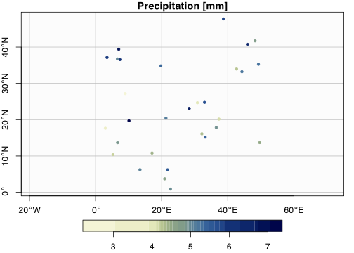

Variables which enter hydrological analysis like temperature or precipitation are measured locally at point locations. Many of these qualities are then recalculated on different domains using interpolation or extrapolation algorithms. We interpolate within the boundary given by the values which are known to us and extrapolate outside this boundary. Here the two common methods for interpolation are demonstrated.
4.1 Inverse distance weighting (IDW)
IDW is a simple deterministic interpolation method, which is also non-parametric. The interpolated points are calculated with a weighted average of the values which are at disposal. The space is a weighted average of the distribution of points and the weight assigned to each point decrease with increasing distance from the interpolated point.
The point value \(Z_p\) is calculated with the knowledge of \(z_i\) and distance \(d_i\) to the power of \(P\).
\[
Z_p = \dfrac{\sum\limits_{i=1}^{n}\dfrac{z_i}{d_i^P}}{\sum\limits_{i=1}^{n}\dfrac{1}{d_i^P}}
\] Since this method is very simpley, let’s calculate it on our own, in a step-by-step manner.
First we generate some point in the spatial domain, which will represent our measurements.
Next we create a new domain, spatially regular to which we will interpolate.
Finally we will perform the calculations and visualize the results.
4.1.1 Random measurements generation
We will create 25 points in the space and also assign some coordinate reference system. These points will be used for both of the methods.
Code
library(sf) # Spatial Feature library for spatial datalibrary(scico) # Scientific pallette collection called "scico"n <-25dom <-data.frame(x =runif(n, 0, 50),y =runif(n, 0, 50),value =rnorm(n, mean =5)) |> sf::st_as_sf(coords =c("x", "y"),crs =4326)plot(dom,nbreaks =26,pal =scico(n =25,palette ="davos",end =0.9,direction =-1),main ="Precipitation [mm]",pch =20, # Point character selectiongraticule =TRUE, # Display graticulesaxes =TRUE, # Display plot axesbgc ="#f0f0f033", # Background colorkey.pos =1) # Legend position
1
Create \(25\) points with random values, which will serve as the computation origin,
2
store them as SimpleFeatures object with coordinate reference system via EPSG, search in https://epsg.io
3
Specify sf:::plot.sf() function and use scientific colormaps from scico package.

We do have the original points, which are scarcely distributed across the domain. Now we need a grid of new points, which will represent the centroids of a raster, on which we want to recalculate.
There are many libraries listed in CRAN geostatistics task view. One of these is called gstat, it was developed and is maintained by Edzer Pebesma, who is also behind the raster and terra packages. The gstat package contains functions no olny for interpolations.
\[
\gamma(h) = \dfrac{1}{2N(h)}\sum\limits_{i=1}^{n}\sum\limits_{j=1}^{n}\Delta Z_{ij}(h)^2
\] where \(\gamma(h)\) represents the semivariance lag at distance \(h\).
Code
df <-data.frame(x =runif(10, 0, 50),y =runif(10, 0, 50),value =rnorm(10))n <-nrow(df)dist_matrix <-as.matrix(dist(cbind(df$x, df$y)))differences_matrix <-matrix(0, n, n)for (i in1:n) { differences_matrix[i, ] <- df$value - df$value[i]}lag_tol <-1# Lag tolerance, you can adjust thismax_lag <-10# Maximum lag distance, you can adjust thissemivariance <-rep(0, max_lag / lag_tol)num_pairs <-rep(0, max_lag / lag_tol)for (i in1:(n -1)) {for (j in (i +1):n) { distance_ij <-sqrt((df$x[i] - df$x[j])^2+ (df$y[i] - df$y[j])^2) lag <-round(distance_ij / lag_tol)if (lag <= max_lag / lag_tol) { semivariance[lag] <- semivariance[lag] + (df$value[i] - df$value[j])^2 num_pairs[lag] <- num_pairs[lag] +1 } }}semivariance <- semivariance / (2* num_pairs)prediction_grid <-expand.grid(x =seq(0, 50, by =1),y =seq(0, 50, by =1))n_grid <-nrow(prediction_grid)semivariance_at_grid <-rep(0, n_grid)for (i in1:n_grid) { differences_to_data <- df$value - prediction_grid[i, ] distances_to_data <-sqrt((df$x - prediction_grid[i, "x"])^2+ (df$y - prediction_grid[i, "y"])^2) lag_values <-round(distances_to_data / lag_tol) semivariance_at_grid[i] <-sum((differences_to_data)^2/ (2* lag_values))}n_lags <-length(semivariance)kriged_values <-rep(0, n_grid)for (i in1:n_grid) { kriging_weights <-rep(0, n) distances_to_data <-sqrt((df$x - prediction_grid[i, "x"])^2+ (df$y - prediction_grid[i, "y"])^2) lag_values <-round(distances_to_data / lag_tol)for (j in1:n) {if (lag_values[j] <= n_lags) { kriging_weights[j] <- (semivariance[lag_values[j]] - semivariance_at_grid[i]) / semivariance[lag_values[j]] } }# Check if there are valid weights to avoid replacement with length zeroif (any(kriging_weights !=0)) { kriged_values[i] <-sum(kriging_weights * df$value) }}
\[
\left[
\begin{matrix}
\mathbf{G} & \mathbf{j}\\
\mathbf{j^\prime} & \mathbf{0}\\
\end{matrix}
\right]
\left[
\begin{matrix}
\lambda\\
\mu_L
\end{matrix}
\right] =
\left[
\begin{matrix}
\mathbf{g}\\
1
\end{matrix}
\right]
\] Where \(\mathbf{G}\) is a rectangular matrix containing the values of variograph for all doubles of measured points, \(\mathbf{1}\) is a vector of weights s with values of
4.3.3 Now we have to state the varigram model. We will calculate the semivariogram
to model the spatial covariance structure. Then calculate the pairwise distances and differences between data points.
Code
n <-nrow(df)dist_matrix <-as.matrix(dist(cbind(df$x, df$y)))differences_matrix <-matrix(0, n, n)for (i in1:n) { differences_matrix[i, ] <- df$value - df$value[i]}